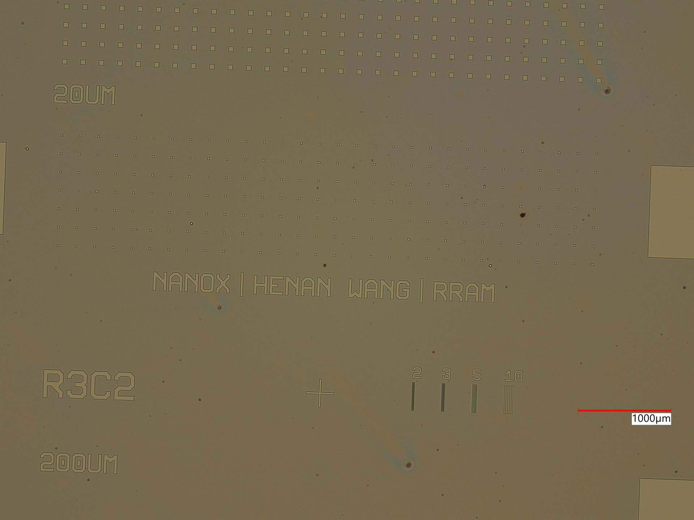
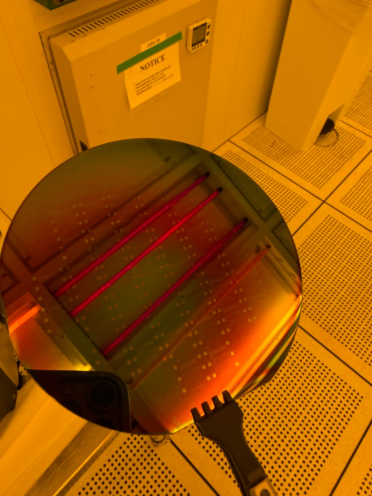
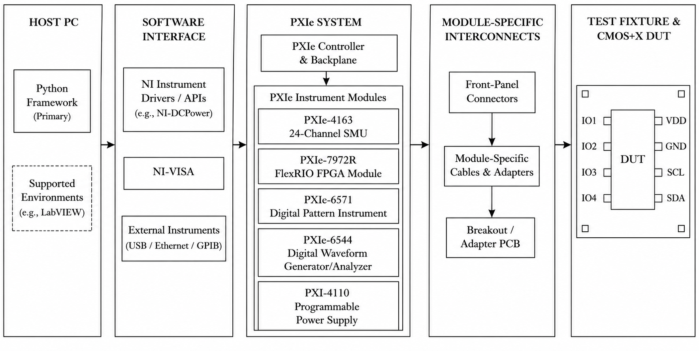
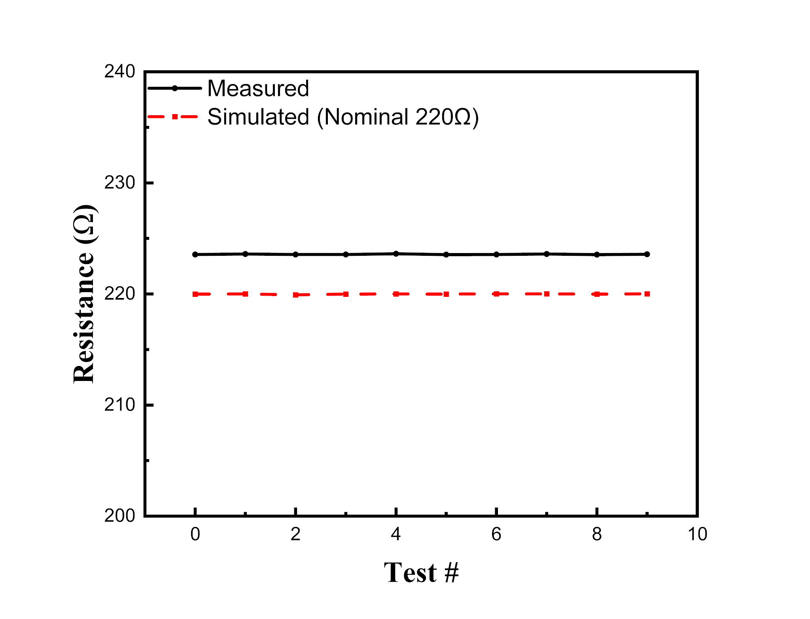

From a patterned wafer to measured switching
At Purdue’s NanoX Lab, I independently designed and fabricated HfO₂-based RRAM devices on bare silicon and measured their resistive switching. I used photolithography, sputtered electrodes, atomic layer deposition and lift-off to build test structures with device sizes spanning 20–200 μm. This work establishes the device process for my next step, integrating RRAM onto an existing CMOS test chip.

Fabrication and automated characterization
- Fabricate the devices. I designed the RRAM patterns and carried out resist processing, maskless photolithography, PVD sputtering, ALD and lift-off. Optical inspection connects the intended pattern to the fabricated features and accessible measurement contacts.
- Measure the electrical response. I tested the fabricated devices and observed resistive switching. The next characterization questions concern the switching distributions, repeatability and retention needed for an integrated experiment.
- Build the test infrastructure. I developed a modular Python framework for NI PXIe instruments. Test recipes define the pin mapping, stimulus and limits, while instrument drivers execute measurements and log the results. Separating these functions supports both simulated device responses and hardware experiments.


Device progress and measurement validation
Completed device work. I have fabricated the RRAM devices on bare silicon and measured resistive switching. BEOL integration and network-level learning are the next stages of the project.
Earlier platform validation. Before device-specific measurements, I checked the SMU path with a nominal 220 Ω resistor. Ten repeated hardware readings clustered around 224 Ω. This check established a baseline for the measurement path’s repeatability and offset.

Next step — BEOL integration on CMOS
I am preparing to build the RRAM devices on a CMOS test chip fabricated by my team. The chip provides pad access to individual NMOS and PMOS transistors. The plan is to use added top-metal routing to connect suitable transistors and RRAM devices into one-transistor–one-resistor (1T1R) cells. The routing design depends on confirming the pad assignments, existing connections and body-bias constraints, together with the process compatibility of the RRAM stack.
Proposed direction — a self-learning 1T1R network
I want to investigate a resistive network whose weights update through local device behavior. Coupled learning compares a network’s free response with its response under an output constraint. Dillavou and colleagues demonstrated this approach in a nonlinear transistor network, storing adjustable gate voltages on capacitors and using local update circuitry. Their work motivates my proposed use of RRAM as a nonvolatile weight. Read the paper.
My hypothesis is that an appropriate bias sequence could use RRAM SET/RESET thresholds to implement local contrastive updates, reducing the need for a comparator at each edge. The key challenge is translating the difference between free and clamped responses into the correct update direction and probability. I plan to study convergence with binary, stochastic and asymmetric switching, and how the switching-probability curve should be shaped for the learning rule.
The initial goal is a small, probe-accessible network for regression, with XOR as a possible later benchmark once the required nonlinear response is established. This is a proposed research direction awaiting simulation and hardware validation.
Research setting and reading
I carry out this work at Purdue’s NanoX Lab under the guidance of Prof. Haitong Li and Zeshu Wang. My CMOS+X research received SURF with Distinction in summer 2026.
Related work: S. Dillavou et al., “Machine learning without a processor: Emergent learning in a nonlinear analog network,” PNAS 121, e2319718121 (2024). Published article · Open preprint.